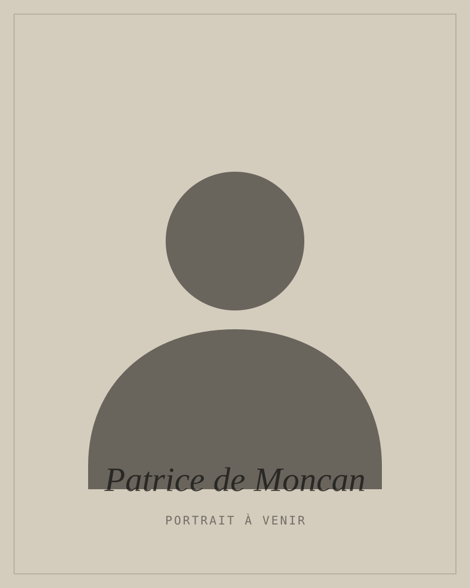

L’histoire devient objet.
Depuis 1987, une maison indépendante transforme la mémoire des entreprises, des lieux et des institutions en livres conçus pour durer.


1987
Une maison qui travaille le temps long.
Monographies d’entreprise, livres anniversaire, catalogues d’exposition, ouvrages institutionnels et beaux livres : chaque projet réunit auteurs, graphistes, maquettistes, photographes, illustrateurs et imprimeurs selon son histoire propre.

Le livre comme objet patrimonial.
Le projet éditorial ne s’arrête pas au texte. Format, papier, iconographie, rythme, typographie, fabrication et reliure participent au récit. L’objet final doit avoir la même densité que l’histoire qu’il porte.
Découvrir l’édition d’entrepriseParis, scène, patrimoine, mémoire.
Le catalogue traverse l’histoire urbaine, l’architecture, les arts et les institutions. Des ouvrages à consulter, offrir, transmettre — et parfois rééditer.


Des livres confiés à la maison, puis recommencés.
BNP Paribas Real Estate, Klépierre/Ségécé, CNCS, FNAIM, Holding Dentressangle : certaines relations se construisent sur de nombreux ouvrages, parfois pendant des décennies.
Voir les référencesReal EstatePlus d’une dizaine d’ouvrages
SégécéPlus de vingt ouvrages
DentressangleSix ouvrages réalisés

Patrice de Moncan · Fondateur-présidentPatrice de Moncan
Paris comme terrain de recherche, le livre comme forme de transmission.
Fondateur et directeur des Éditions du Mécène depuis 1987, Patrice de Moncan est l’auteur de nombreux ouvrages consacrés à Paris, à la ville, au commerce et au patrimoine.
Des ouvrages distingués.
La maison met en avant plusieurs récompenses obtenues pour des ouvrages commandés ou publiés au fil de son histoire.
Prix international du livre de gastronomie
Histoire de la Gastronomie en Europe · Jean Ferniot
Prix du livre d’art de la Ville de Paris
Histoire de la Gastronomie en Europe
Grand Prix Haussmann · FNAIM
Le Paris d’Haussmann · Patrice de Moncan
Prix Charles Garnier
Société de Géographie · Le Paris d’Haussmann
Grand Prix du Livre d’Art
Musée d’Orsay & SACEM · L’Opéra russe
Créer un objet que l’on ne jette pas.
Anniversaire, transmission, patrimoine, fondateur, lieu, savoir-faire ou cadeau institutionnel : présentez votre projet à la maison.
Présenter votre projet